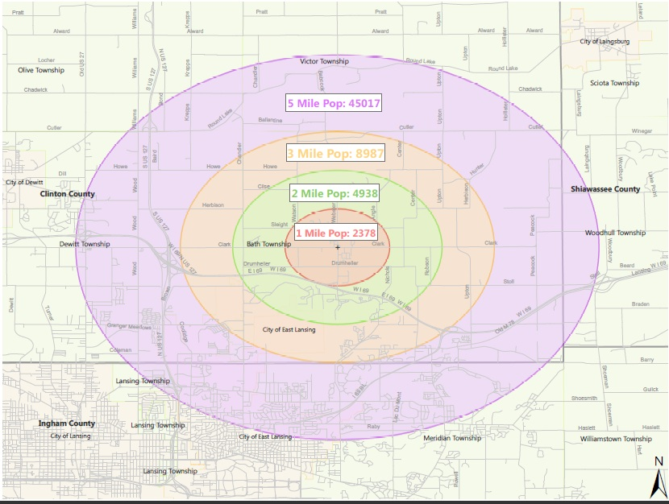

Bath township is a community on the rise and looking for investors. Located 15 minutes north of East Lansing in the southeast corner of Clinton County, Bath township is growing fast. Lacking common conveniences, citizens and elected leaders alike are embracing change and welcoming new entrepreneurs to the area. Concentrating on the intersection of Clark and Webster, the township is committed to enabling investment by offering incentives to new businesses. This site is intended to be your first stop in understanding the area and answer questions that you may have about site requirements. If you have any further questions regarding the township please use the contacts list above and be sure to add yourself to the entrepreneur directory. Enjoy your visit and remember, Bath Township is the Right Investment!
Use our concentric radius map to determine the population density of your preferred trade area.
In order to better understand what the community wanted, a survey was conducted by four engineering students from Michigan State University. The survey, which can be found at a link at the top of the page, allowed citizens to categorize themselves by income level and then rate their interest in having various industries move into the intersection of Clark and Webster. The target population for the survey was local families, and the majority of the results came from the local elementary school. A total of 490 citizens responded to the survey, allowing the results below to reach statistical relevance. Overall, it can be assumed with 95% confidence that the results accurately depict the opinion of the township as a whole, and should be used to better understand the potential for customers within the community.
The bar graph above displays community interest amongst those households with an average annual income of $100,000 or greater.
The bar graph above displays community interest amongst those households with an average annual income between $50,000 and $99,999.
The bar graph above displays community interest amongst those households with an average annual income between $25,000 and $49,999.
The bar graph above displays community interest amongst those households with an average annual income of less than $25,000.
Bath township has seen a population growth of 53% over the last ten years. Applying this recent data to historical trends, the future population of Bath Township has been projected. Furthermore, the traffic flow of the Clark and Webster intersection has also been projected based on historical relationships to the township population.
The graph above displays the projected population of Bath Township through 2030.
The graph above displays the projected daily traffic flow for the Clark-Webster intersection through 2030. Various industry standard values have been added to the graph to help visualize when required traffic flow has been reached.
If you are a local entrepreneur, Bath Township wants you! Sign up to be added to the township entrepreneur directory to receive information on new development projects and various benefits the DDA is currently offering.